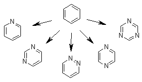

Either Growing mode or Linking mode needs seed structures as the starting point for building up ligand molecules. Although LigBuilder V3 provide an automatic extractor to generate seed from known inhibitors, it is important to check these seed structure carefully. Besides, user may create your own seed structure, which introduces much flexibility into the application of LigBuilder V3. Then we described how to build a seed structure manually fisrt.
Choosing a proper seed structure is very important because all the resultant molecules are the derivatives of the seed structure. Therefore, it will be ideal if the seed structure holds the key feature of the prospective ligands. For example, it may form significant interactions with the target protein; or it is a proper spatial framework; or it is a good starting point for organic synthesis. There could be so many smart ways to choose one seed structure. For example, you may start form a relevant X-ray crystal complex structure. There must be some chemical groups on the ligand which exhibit important interactions with the protein. You can extract them as the seed structure. Or you can use the popular fragment based technique to obtain small fragments binding to the binding site. Or if you have got a lead compound without known binding conformation, you can dock it into the binding pocket and tailor it as the seed structure. Or you can dock some small groups, such as ammonia, formaldehyde, benzene, and etc., into the binding pocket as the seed structure. The seed structure could be as large as a "common" molecule or, in principle, as small as just one heavy atom, such as methane.
The seed structure is presented in a Mol2 file. Please notice that all the valences on the seed structure must be fulfilled, and hydrogen atoms should be added. Please check the atom type and bond type of your structures carefully, since these information may lost or changed during format converting. (Here we suggested users to use openbabel(free) or openeye(free for academic) to convert molecules come from PDB file or other formats.) You are assumed to label "growing sites" on the seed structure by simply change the atom type of the corresponding hydrogen atoms from "H" to "H.spc". You can do this in the molecular editing software (e.g. Sybyl) or edit the Mol2 file manually. Build will take all the special hydrogen atoms, i.e. "H.spc", on the seed structure as growing sites. Fragments will be added to these growing sites to generate new molecules. Labeling growing sites on each fragment will increase the chance of successful linking. Alternatively, if you do not conern about which hydrogens should be used as growhing site, you could simply set "ADD_HSPC" parameter "YES" to treat all hydrogen atoms to growing site, without any editing on the Mol2 files. You should set "ADD_HSPC" parameter to "NO" if you want to label the growing site by yourself. Attention: The seed structure for running Build is assumed to contain only one piece of chemical fragment. And please make sure that the seed structure is positioned at the right place inside the binding pocket. LigBuilder V3 only perform a slightly optimization on the seed structure.
These concepts may confuse you especially when you are using LigBuilder V3 for the first time. You are suggested to study the sample seed structures "seed.mol2" included in the directory "LigBuilderV3/example/receptor".
Besides, the automatic extractor is very easy to use, user may simply run the "Seed" function when tell the program the list of known inhibitors. Similar to creating seed structure manully, the provided inhibitors for extracting should be positioned according to the coordinates of receptor. That is, you should align all other X-ray crystal complex structures to the selected receptor structure before extracting the ligands from complexes, or you should dock these molecules to the selected receptor first if you don't know the binding conformation. Please notice that all the valences on these structures must be fulfilled, and hydrogen atoms should be added. Please check the atom type and bond type of your structures carefully, since these information may lost or changed during format converting. (Here we suggested users to use openbabel or openeye to convert molecules come from PDB file or other formats.) The extractor will assign the growing sites according to the cutting mode during extracting, and user may change these marks by editing the outputting seed structures as mentioned above. Moreover, the "Seed" function will also read user defined seed structure, and combined them with the extracted fragments. This is required for multi-target design, because all the input seed structure for multi-target design should be mapped (pairwised) first.
Here is an example of running automatic extractor, you may study the "Seed" section in "build-just-example.input" in the directory "LigBuilderV3/example":
cd LigBuilderV3/example
./build -Extract build-just-example.input
Since the automatic extractor is best suited for mimic design, users may find the corresponding parameter sets in the mimic design section of the "LigBuilderV3/default/usersettings.input"
In recent years, some empirical rules for evaluating the "drug-likeness" of a compound have been proposed. Maybe the most popular approach is the so-called Lipinski rules (Adv. Drug. Delivery. Rev. 1997, 23, 3-25). According to the Lipinski rules, poor absorption or permeation are more likely when:
Thus if a molecule violates the above rules, it is not likely to be a successful lead compound. In LigBuilder V3, we have set similar parameters to control the chemical viability of the generated molecules. You are encouraged to edit these chemical rules to meet your own purpose. The following key words will appear in the parameter file for GROW or LINK.
"MAXIMAL_MOLECULAR_WEIGHT": maximal molecular weight.
"MINIMAL_MOLECULAR_WEIGHT": minimal molecular weight.
"MAXIMAL_LOGP": maximal LogP value.
"MINIMAL_LOGP": minimal LogP value.
LigBuilder V3 calculates LogP values using the XLOGP V3 algorithm. For more detailed description of this algorithm, please refer to: Wang, R.; Gao, Y.; Lai, L. "Calculating partition coefficient by atom-additive method", Perspectives in Drug Design and Discovery, 2000, 19, 47-66.
"MAXIMAL_HB_DONOR_ATOM": maximal number of H-bond donor atoms. Here, a donor atom refers to any nitrogen or oxygen atom with at least one hydrogen atom attached, i.e. -OHs or -NHs.
"MINIMAL_HB_DONOR_ATOM": minimal number of H-bond donor atoms.
"MAXIMAL_HB_ACCEPTOR_ATOM": maximal number of H-bond acceptor atoms. Here an acceptor atom refers to any nitrogen or oxygen atom with at least one lone pair.
"MINIMAL_HB_ACCEPTOR_ATOM": minimal number of H-bond acceptor atoms.
"MAXIMAL_PKD": maximal binding affinity to the target protein. It is presented in pKd unit.
"MINIMAL_PKD": minimal binding affinity to the target protein.
LigBuilder V3 estimates binding affinities using the SCORE v4.0 algorithm. It is inherit from SCORE V3.For more detailed description of this algorithm, please refer to: Score V3:Wang, R.; Liu, L.; Lai, L.; Tang, Y. "SCORE: A new empirical method for estimating the binding affinity of a protein-ligand complex", J.Mol.Model., 1998, 4, 379-394.
To be frank, a "proper" set of these chemical rules will depend on the project you are working on. But a "general" set could be like this: molecular weight: 160~500 LogP: -0.4~5.6; Donors: 2~10; Acceptors: 2~10; predicted pKd: 6~12.
As mentioned in the Introduction section, LigBuilder V3 uses molecular fragments as building-blocks to build ligands. The default building-block fragment library employed by LigBuilder V3 is stored in the directory "fragment.mdb". This library contains nearly 180 fragments, including most of the common chemical groups and ring frameworks observed in organic compounds. Each fragment is presented in a Mol2 file. All the fragments have been pre-minimized.
There is a file named as "INDEX" in that directory listing the contents of the building block library. You can edit this file to determine which fragment will be used in the ligand construction and which will not. The format of "INDEX" is like this:
1 frag_01.mol2 1.00
methane
2
frag_02.mol2 0.50 ethane
3
frag_03.mol2 0.00 propane
......
Here each line describes one fragment. The first column is the ID of the fragment. Each fragment must have its unique ID number. The second column is the name of the corresponding Mol2 file. The third column is the "acceptability" of the fragment. The last column is the name of the fragment.
The funny part is the "acceptability". This value should be between 0 and 1. If it is set to 1.00, the fragment is fully accepted for the ligand construction; if it is set to 0.00, the fragment is fully rejected. So what if the value is between 0 and 1? In fact, every time when LigBuilder V3 tries to extract a certain fragment, the program will generate a random number between 0 and 1 and compare this number with the acceptability of that fragment. If the random number is smaller than the acceptability, the fragment will be extracted. Otherwise, it will be rejected. Thus you can control the occurrence of a certain fragment in the generated molecules simply by modifying its acceptability.
Although the default building-block library contains various fragments, according to our own experience, in most cases you do not need all of them. In another word, please use only necessary fragments to build your molecules. This will save computational time and make the resultant molecules less "fancy". You can let the program to neglect the unwanted fragments by setting their acceptability to 0 in the INDEX file.
Of course you are not limited in using the default building-block library. You can also add new fragments to the library. What you need to do is: (i) build the fragment and save it in a Mol2 file; (ii) copy the file into the directory "fragment.mdb"; (iii) add a new line in file "INDEX" to define the fragment. A more ambitious attempt is to build your own fragment library. This might be helpful when you try to design a special combinatorial library. In this case, what you need to do is simply assembling all your fragments into a directory and creates the "INDEX" file under that directory.
While building your own fragment, please notice that the fragment must be presented as a complete molecule: all valences should be filled and hydrogen atoms should be added. Please check the atom type and bond type of your structures carefully, since these information may lost or changed during format converting.The geometry of the fragment should be minimized because LigBuilder V3 will not do this. It will be ideal if the fragment is rigid. If you have to include rotatable single bonds in the fragment, please provide the "typical" conformation of that fragment. But if you like, you can also save several conformations of the same fragment in different Mol2 files and label them as different fragments.
Do not forget to set at least one growing site on the fragment. You can do it by changing the atom type of the corresponding hydrogen atom from "H" to "H.spc". The simplest way is to set all the hydrogen atoms on the fragment as growing sites. You can also choose to assign only some of the hydrogen atoms as growing sites. By doing so, you can add your expertise of organic synthesis to the ligand construction.
Besides, LigBuilder V3 provides two functions to build fragment library automatically. The "ExtLibrary" function will help user to build a fragments library with rigid conformation, and the "RotLibrary" function will build library with multi-conformation fragments. These function will select fragments according to their frequency of occurrence, so the target molecule database should be large enough. LigBuilder V3 has already prepared two multi-conformation fragments library, one is generated based on the compounds from bio-active compounds library CHEMBL, drug-like compounds library DrugBank, WDI, and SuperDrug, which is named as "Bio-Like" fragments library. Another one is generated based on DrugBank, WDI, and SuperDrug, which is named as "Drug-Like" fragments library. The deafult is Bio-200 library, which means that only fragments that with more than 200 occurancy in Bio-Like compounds are used. User may change this setting by BUILDING_BLOCK_LIBRARY_ROTATABLE parameter. You could also generarte your own ExtLibrary (-ExtLibrary function) or RotLibrary (-RotLibrary function), please refer to the "Building Database" section in "LigBuilderV3/default/default.input".
Another special note should be addressed here. Actually each fragment in the building-block library is treated not as a "specific" fragment but rather a template. While building the ligand molecules, LigBuilder V3 will perform mutations on the structure whenever it is necessary to improve the binding affinity. Carbon, nitrogen and oxygen atoms with the same hybridization state are allowed to mutate to each other. For example, the "benzene" in the library actually represents benzene itself and other hetero-substituted six-membered aromatic rings. This strategy frees the user from employing numerous fragments to represent chemical structures.

Each fragment in the building-block library is actually a template
We will highly appreciate it if you have developed your own building-block fragment library and are willing to share it with other LigBuilder V3 users. Please send us a copy of your library and we will add it to the LigBuilder V3 package and distribute it to the public.
While building up the molecules, LigBuilder V3 has some built-in rules to avoid "bad structures", such as -O-O-, -N-O-, -N-N-, and etc. But this may not be enough for generating reasonable lead compounds. Therefore, LigBuilder V3 could also use a built-out, user-maintainable fragment library as a supplement. We call it "forbidden substructure library". While building up the ligand molecules, the program will check each molecule to judge whether it contains any substructure defined in the forbidden substructure library. If so, this molecule will be rejected.
The parameter "APPLY_FORBIDDEN_STRUCTURE_CHECK" in the parameter file determines whether to apply such checking. It could be "YES" or "NO".
LigBuilder V3 has provided a default forbidden substructure library. This library is stored at directory "forbidden.mdb". Each substructure is presented in a Mol2 file. There is also a file named "INDEX" under that directory which lists the contents of the library. The format of the index file is just the same as the one for "fragment.mdb". You can edit that file to determine which substructure will be used in forbidden substructure checking and which will not. Please notice that if the acceptability of a certain structure is set to 1.00, it means that this structure will be used in checking and thus is fully forbidden in the resultant molecules. On the contrary, if the acceptability is set to 0.00, it means that the structure will not be used in checking and thus could exist in the generated molecules. Here we do not recommend you to set an acceptability between 0 and 1 because it is rather weird (what does it mean if you do so?).
You will find that the default forbidden substructure library contains only a dozen of structures because we believe it should be left open to you (you may have much more brilliant ideas than we do). You are encouraged to add new forbidden substructures to the library. To do so, firstly you should build the structure and save it in a Mol2 file. Then please copy it to the directory storing the library and add a line in the "INDEX" file to define this new structure. This process is the same as the one for adding a fragment to the building-block fragment library. Of course this time you do not have to assign growing sites on your molecules.
We will highly appreciate it if you have developed your own forbidden substructure library and are willing to share it with other LigBuilder V3 users. Please send us a copy of your library and we will add it to the LigBuilder V3 package and distribute it to the public.
One of the on-going projects in our lab is studying the structure-toxicity relationship of the organic compounds. We have analyzed the Registry of Toxic Effects of Chemical Substances (RTECS, C2 96-4) database and derived nearly 80 chemical structures which tend to be toxic. For more detailed description of this work, please refer to: Wang, J.; Lai, L.; Tang, Y. "Structural features of toxic chemical for specific toxicity", J.Chem.Inf.Comput.Sci., 1999, 39, 1173-1189.
These structures have been summarized as the "toxic substructure library". It is saved in the directory "toxicity.mdb". The parameter "APPLY_TOXIC_STRUCTURE_CHECK" in the parameter file (for GROW and LINK) determines whether to apply toxic substructure checking. It could be "YES" or "NO". If it is switched on, those molecules containing any toxic substructures will not be collected in the resultant virtual library.
Of course you are also free to edit this library. Each structure is presented in a Mol2 file. There is also a file named "INDEX" under that directory which lists the contents of the library. The format of the index file is just the same as the one for "fragment.mdb" or "forbidden.mdb". You can edit that file to determine which structure will be used in toxic substructure checking and which will not. Please notice that if the acceptability of a certain structure is set to 1.00, it means that this structure will be used in checking and thus is fully forbidden in the resultant molecules. On the contrary, if the acceptability is set to 0.00, it means that the structure is not used in checking and thus could exist in the resultant molecules. Here we do not recommend you to set the acceptability between 0 and 1.
You can also add new structures to this library. To do so, firstly you should build the structure and save it in a Mol2 file. Then please copy it to the directory storing the library and add a line in the "INDEX" file to define this new structure. In fact, you are not restricted in considering only toxicity. Other properties which are important for lead discovery, such as chemical stability, can also been counted. You just add anything that you think is not proper for a potential lead compound to this library.
We will highly appreciate it if you have developed your own library and are willing to share it with other LigBuilder V3 users. Please send us a copy of your fragment library and we will add it to the LigBuilder V3 package and distribute it to the public.
After each generation of Build process, the program will save the current seed library to a file specified by the keyword "SEED_RECORD_FILE" in the parameter file. This file is in Mol2 format. If you want to resume your former job, you can simply run the program with "Continue" or "DContinue" mode to resume with the seed library. This is not necessary for "Automatic" mode.
Binding site:
Binding site is the base of the whole design process, users should survey the target receptor carefully before carrying out a design process. The key structure information, i.e. mutation, ligand complex effects, flexibility, conformational change, metal iron, uncertain atoms around binding site, should be considered in determining the receptor. In most cases, the receptor complexed with an potent inhibitor with high resolution will be fine.
Then Cavity module will give a detection result of the receptor. Please indentify which potential site outputted is the right one manually. If the detection result is not good enough, users may change the detection parameter of Cavity and try again until the detection site could present the desired design area accurately. However, sometimes you may could not try out an appropriate parameters for Cavity, then you can simply set "ONLY_GENERATE_GRID" parameter to "YES", which force Cavity generate grid files for LigBuilder. In this case, it is better to use "DETECT_MODE" to 2 or 1, which helps to locate the binding site and reduce the size of grid box, otherwise, the computational efficiency will signifcantly decrease. Anyway, force Cavity to generate grid is not recommended, it is just the last choice.
Cavity will report a predicted pKd of the sites which indicates the maximal binding affinity expectation of molecules binding to it. If it is less than 6.0(1uM), you may adjust the detection parameter to increase the estimation, or, imply that this binding-site may be not a suitable drug design target.
Molecule diversity and synthesis accessibility:
Generally speaking, high diversity of the molecule is disadvantage because the chemical structure space is extremely large and it is not difficult to find simply structure with high binding affinity, and high diversity of molecules will decrease the synthesis accessibility. But sometimes increase the diversity will help us to find novel scaffold and exert the binding affinity, so user may determine the design diversity depends on the purpose.
We suggest that user do not change the parameter of the synthesis module at will, since we had already balanced the analysis accuracy and time consuming carefully. User may load preset parameter sets instead.
Binding affinity:
The default outputting pKd limit is 6.0(1uM), and user may change this according to the predicted pKd of Cavity.
Bioactivity:
The false-positve ratio of de novo design process is far more important compared with virtual screening, since the expensive cost of synthesizing a new compound. LigBuilderV3 provides a "recommender" that applied a statistical algorithm to enhance the enrichment factor, and the recommend accuracy will increase with the increasing of number of molecules designed. So it is very important to design a huge number of molecules, the more , the better.
Lead structure could be used for step-by-step design and chemical derivation. LigBuilderV3 could design lead structure with low weight and high atom efficiency.
User can enable lead design by loading the preset in the lead discovery section of "LigBuilderV3/default/usersettings.input". The lead design mode will limit the weight between 160~300 Da and extend the range of LogP to -2.4~7.6, besides, the minimal output pKd is 4.0(100M). Notice: It is better to use lead design strategy in Exploring mode.
Then user can run the Exploring mode of Build as the same as normal design process.
Build could optimize molecules based-on the starting structure derive from existed molecules and lead structures. Starting structure will be used as seed structure of Growing mode. User should make sure that these molecules are positioned well, otherwise, user should dock them into the receptor first. Please notice that all the valences on the structure must be fulfilled, and hydrogen atoms should be added. Please check the atom type and bond type of your structures carefully, since these information may lost or changed during format converting. You can assign the "growing site" following "How to build the "seed" structure" or simply set "ADD_HSPC" to "YES" to change all the hydrogen atoms to "growing site".
Then user can run the Growing mode of Build as the same as normal design process.
Design mimic inhibitor has many advantage above the de novo design process, it would help users to make use of the known inhibitors, bioactive nature products, even inhibitors that short of improvement potential. As we known, active molecules implies the important interaction mode and key interaction group, hence the fragments of active molecules are potential binding anchors. Build could extract these anchors and try to recombine them into new molecules. Evidently molecules designed by this strategy are more reliable. In addition, the extractor tends to find important interaction rather than scaffold. Build will try to link these interaction groups by new structures, so this strategy is not likely to drag the novelty of scaffold. And of course, user should provide enough inhibitors with different binding mode to enhance the diversity.
After extracting the known structures (Please refer to "How to build the "seed" structure"), we suggest user to check these fragments to discard irrational structures. And user may add other key fragments manually.
Besides, user could extracting the interaction information from known structures, and user also could set special restraints based on knowledge (Please refer to "Go deep into the control of design")
User can enable mimic design by loading the preset in the mimic design section of "LigBuilderV3/default/usersettings.input". Notice: It is better to use mimic design strategy in Linking mode (if seed structure>5), Growing mode(if seed structure <=5). User may increase the "MINIMAL_LINKING_NUMBER" if you have sufficient extracting fragments(seed structre >100). Default is 2, that is, Build will output molecules that content two seed fragments.
Then user can run the Growing/Linking mode of Build as the same as normal design process.
The flow of performing multi-target design (PROTEIN_NUM>1) is very similar to performing single-target design(PROTEIN_NUM=1). Simply, user should run Cavity for each target, and collect known inhibitors (if exists) and prepare seed strctures for each target separately. Everything you should do is same with single-target design except that you need to repeat the preparation steps for each target (special requirment for growing or linking mode: common seed structures for each targets are needed). But, it should be noticed that multi-target design may be impossible to achevie high binding affinity due to more restraints from multiple targets, so all the requirment should be carefully revised. User could run it with default parameters, and then check the "active_TaskName.list" (e.g. active_1db4.list) to inspect the status of design for adjusting parameters.
The weight of each target could be different in design, user could set MULTI_WEIGHT parameters for individual targets. For example, if you want to perform a 3 targets design, however, the target 2 is not as important as the other two, then you can set MULTI_WEIGHT[2] to 0.5 whereas MULTI_WEIGHT[1] and MULTI_WEIGHT[3] to 1.0, which will lead LigBuilder to pay more attention to target 1 and 3 in design.
Multi-target design also could be done in single target, to be precise, it is a multi-conformation design algorithm. User could design a ligand that binding to different binding site of a target, or design a ligand that binding to a ligand binding site with different conformation. This is a promising way of design lead compounds, because multiple possible binding conformation may increase the binding affinity, and decrease the risky of "false positive". This is also useful for design compounds targeting multi-conformation proteins or even disordered proteins.
LigBuilder has already provided two material databases in the package, including Sigma Building Block (LigBuilderV3/synthesize.mdb/MATERIAL-SIGMA-BB.INDEX) and ZINC&ACD (LigBuilderV3/synthesize.mdb/MATERIAL-ZINC-ACD.INDEX). User may copy the selected database to LigBuilderV3/synthesize.mdb/MATERIAL.INDEX to take effect. (Default is Sigma building block) User could also obtain other commercial available molecules database as the material library of LigBuilder V3, e.g. ACD, ZINC, SPECS or other databases which user may gain these entities for synthesis. If material library is absence, LigBuilder will judge the material by some simple experiential rules.
If you would like to construct your own database, please convert your material library file to Mol2 format and set to the corresponding path of the parameter SYNTHESIZE_MATBUILD. Please notice: user should assign the source or name of the molecule as the title of molecule (e.g. ZINC00018471) if the current title is not recognizable , as LigBuilder V3 will use the title to indentify where the material molecule come from. All the valences on these structures must be fulfilled, and hydrogen atoms should be added. Please check the atom types and bond types of your structures carefully, as these information may be lost or changed during format converting. Entering the working directory and build database by following commands (default input path is "LigBuilderV3/build/material.mol2"):
cd LigBuilderV3/build
./build -MatDatabase material.input
Drug design is a very complex and delicate work, we should not expect that there is an universal strategy for every drug target. Although LigBuilder V3 could work with very little human intervention, any knowledge from users should help a lot for the design. LigBuilder V3 also provide many paramters for controling the design process and relizing the user's intention.
Defined interactions: It is feasbile for user to define the hot spot or custom the design process by defining key interactions. User could define detailed interactions between protein and ligand to custom the design of desired interactions or block undesired interactions. Set "APPLY_KEY_INTERACTION" to "YES" to enable this function. Please refer to "LigBuilderV3/example/key_interaction" to learn how to describe the interaction.
Baised scoring function: LigBuilder V3 could use fragments from known inhibitors, however, it could use only a little of information from known inhibitors in this way. Alternatively, LigBuilder V3 could construct a baised scoring function based on the known inhibitors, which could help to use more information from known inhibitor to guide the design. User could use "-Interaction" function to extract interaction grid, and set "APPLY_KEY_INTERACTION" to "YES" to enable it.
External call: LigBuilder V3 has many built-in modules for estimatinge the priority of ligand during the design process, however, you may have you own idea in prioritizing ligand for your target. Ligbuilder V3 provides a interface for incoprating user's software into design process. Set "APPLY_EXTERNAL_CALL" to "YES" and to enable this function. Please refer to "LigBuilderV3/example/external_call" to learn how to use this function. User may use any external algorithm, such as ADMET, BBB model, other scoring functions, similarity search. I also suggest user to use synthetic complexity score (e.g. scscore: https://github.com/connorcoley/scscore) in design, it will helps to generate more rational results. But it should be noticed that external call will drag the performance if it is too slow.
Structure settings:
GROWING_SEQ: The most important structural control parameters which determined the maximal number of specific fragments in the designed compounds. Please refer to "LigBuilderV3/default/default.input" for details. FILTER_SEQ is usually same with GROWING_SEQ, however, if user changed the requirement during design process, user may change FILTER_SEQ to removed undesired ligands in filter stage.
WINS_BINDING_SCORE_ADJUST, WINS_BINDING_SCORE_AVERAGE, WINS_STRUCTURE_SCORE, WINS_SYNTHESIZE_SCORE, WINS_CHEMICAL_SCORE: Weight of binding score, average binding score (bindscore/number of heavy atoms), structure score (Key-lock maching score), synthesis score, chemical score..
MAXIMAL_NORING: maximal heavy atom number if no ring structure exist
MAXIMAL_BRANCHPERCENT: maximal heavy atom number percent of all branches
MAXIMAL_SINGLEBRANCH: maximal heavy atom number of a single branch
MAXIMAL_HMVSHB: maximal ratio of hydrophobic interaction vs hydrogen bond
[Content] [Introduction] [Download] [Install] [Overview] [Cavity] [Build] [Skills] [FAQs]
(These web pages are edited by Yaxia Yuan. Latest update: Oct., 2019)